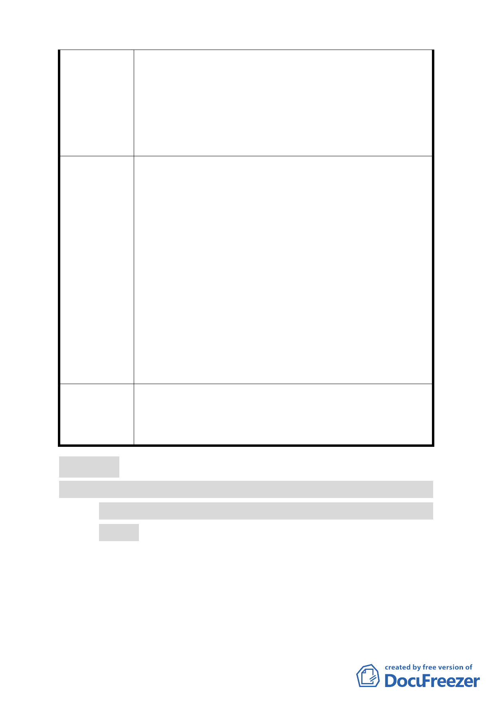

發展局回應
委員會決議
水不佳之影響。
三、 住商混合區使用用途以住宅為主，為維護住宅使用之
安全性應比照住宅區合法設置圍牆相關規定。
四、 取消「基隆河（中山橋至成美橋段）計畫案（南段地
區）」科技工業區（供倉儲使用）及科技工業區 C 區
設置土地及建築物使用組別第 55 組（公害嚴重之工
業）規定。
一、 有關「住商混合區」牆面線退縮之相關規定，經檢討
為維持全區牆面線之一致，營造連貫之步行空間及延
續商業行為，擬將陳情意見有關「住商混合區」供住
宅使用之樓層，其牆面線應自面前道路境界線退縮 8
公尺修正為 5 公尺，併同納入審議。
二、 為營造本地區全區視覺景觀之穿透性，考量住商混合
區之使用除住宅外仍可比照第三之一種住宅區允許
多樣化的商業使用，故建議維持不設圍牆之規定。
三、 有關本計畫案內擬調整比照「臺北市內湖輕工業區輔
導管理辦法」附條件允許第 55 組公害嚴重之工業使
用 1 節，係考量其附條件允許之項目，主要僅限原料
藥製造業及生物藥劑製造業等生物科技產業，並得從
事業務產品之研發、設計等相關業務，且尚須符合藥
事相關法令等規定，並非允許所有第 55 組其他公害
嚴重之工業進駐本區域。
為利計畫執行一致性，有關「內湖區新里族段羊稠小段附
近地區都市計畫案（五期重劃區）」內住商混合區之牆面
線，修正應自面前道路境界線退縮為 5 公尺。餘依市府（發
展局）回應內容辦理。
討論事項三
案名：變更臺北市士林區光華段四小段 794 地號機關用地（供天
文科學館使用）為機關用地（供臺北藝術中心使用）細部
計畫案
案情概要說明：
一、本案位於捷運劍潭站西側，面積 20753 平方公尺，為市有土
地。
二、依市府 94 年 7 月 1 日公告之「擬（修）訂北投士林科技園
15